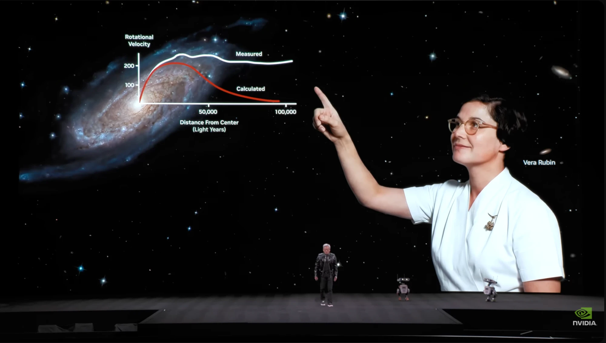

Courrier 010: Dark Matter Day 2026 — この一年のまとめ

今日10月31日は Dark Matter Day です！ ということでここ一年のダークマター業界のニュースを振り返ってみたいと思います。
2025年11月: 天の川銀河のハローから 20 GeV のガンマ線超過
東京大学から「暗黒物質がついに見えた！？」というプレスリリースが出て話題になりました。 天の川銀河のハローから 20 GeV 付近のガンマ線の超過が見つかり、暗黒物質の対消滅で説明できるかもしれない、という内容でした。 これについては2月にリリースしたポッドキャストのエピソードでも話しています。
- 暗黒物質がついに見えた！？ー天の川銀河のハローから高エネルギーガンマ線放射を発見ー - 東京大学 大学院理学系研究科・理学部
- 20 GeV halo-like excess of the Galactic diffuse emission and implications for dark matter annihilation - IOPscience
- Interaxion 67: シーズン2
2026年8月: XENONnT が pp 太陽ニュートリノを観測
2026年8月31日、XENON コラボレーションがイタリアのグランサッソ国立研究所 (LNGS) でのセミナーで、XENONnT 検出器で低エネルギーの太陽ニュートリノが電子を散乱する事象を初めて観測したと発表しました。 信号の大部分は、太陽の中心で陽子同士が融合する反応 (pp 反応) から出てくる pp ニュートリノによるものです。統計的有意度は発見の基準とされる 5σ に達しています。 電子反跳のエネルギー閾値を 1 keV まで下げたことと、ラドン (222Rn) 由来の 214Pb バックグラウンドを抑えたことが効いているそうです。 ラドンの低減については去年の Dark Matter Day の X Spaces でも話していました。
XENONnT は2024年に 8B 太陽ニュートリノによる原子核反跳 (CEνNS) の兆候も捉えていて、ダークマター検出器によるニュートリノ検出器としての成果が続いています。 これは太陽ニュートリノがどんどん見えてきて、ダークマター探索にとっては手強いバックグラウンドになる (ニュートリノフォグ) という意味でもあります。 なお PandaX-4T も2026年6月の Neutrino 2026 で pp ニュートリノのフラックスの暫定結果を発表しています。
- arXiv:2608.29450 First Measurement of Solar Neutrinos through Elastic Neutrino-Electron Scattering at the keV Scale
- XENONnT: First Measurement of Low-Energy Solar Neutrinos Scattering off Electrons - Columbia University Physics
- First measurement of low-energy solar neutrinos scattering off electrons - Phys.org
- Interaxion 63.5: Straying into the Neutrino Fog
- ニュートリノフロア - Interaxion Keywords
2026年9月: LZ 実験で WIMP 候補が1イベント
同じく液体キセノンを使った LZ (LUX-ZEPLIN) 実験が、2023年に取得したデータの中にバックグラウンドでは説明しにくいイベントを1つ見つけたと日本で開催された TeVPA 2026 で発表しました。 有意度は 2.6σ (バックグラウンドで説明できる確率は約0.5%) で、発見の基準の 5σ には届いていません。 もしこれが WIMP によるものなら、質量は 200 GeV/c² 以上と考えられるそうです。
このイベントは原子核反跳のエネルギーが約 248 keV と大きく、期待されるバックグラウンドは約 0.01 イベントしかありません。 一方で、普通の WIMP の弾性散乱ならもっと低いエネルギーの反跳もたくさん来るはずなので、248 keV のイベントが1個だけというのは説明しにくいようです。 この発表のあと、結果を理論的に解釈する論文がたくさん arXiv に出ました。 2015年に LHC で検出された 750 GeV ダイフォトンピーク (3σ以上ありましたが後に消えました) のときもたくさんの理論論文が出ましたが、そのときと同じような盛り上がりを感じます。
- LZ experiment may have detected dark matter for the first time - CNN
- Experiment sees surprising result in search for dark matter - Penn State
- New research reveals surprising result in search for dark matter - University of Bristol
- 理論論文の例
- arXiv:2609.01583 Higgsino Dark Matter Interpretation of the LUX-ZEPLIN 248 keV Nuclear-Recoil Event
- arXiv:2609.02608 Dark Matter at the Kinematic Edge: Interpreting the 248 keV LZ Nuclear-Recoil Candidate
- arXiv:2609.07742 Boosted dark particles and the LZ nuclear recoil event
- arXiv:2609.14799 Boosted or Inelastic? Discriminating Interpretations of the LZ 248 keV Event
- arXiv:2610.25423 Exothermic Dark Matter with a Dark Higgs: The LZ 248 keV Event and the Galactic Center Excess
NVIDIA の Vera Rubin が登場
ダークマターの存在を銀河の回転曲線から示したヴェラ・ルービンの名前を冠した、NVIDIA の新しいアーキテクチャ「Vera Rubin」が今年登場しました。 CPU が Vera、GPU が Rubin という名前だそうです。 CESで革ジャンがダークマターの話をしていたのが印象的でした。

CES 2026 の NVIDIA 基調講演で映し出された銀河の回転曲線とヴェラ・ルービン (画像: YouTube)
ちなみにロードマップでは、Rubin Ultra のさらに次のアーキテクチャは我らが「Feynman」だそうです。
- Rubin (microarchitecture) - Wikipedia
- Vera C. Rubin Observatory - Wikipedia
- Nvidia CEO Jensen Huang Says Blackwell Successor Vera Rubin Is In ‘Full Production’ At CES 2026 - Yahoo Finance (Benzinga)
ニュートリノ界隈: スーパーカミオカンデと IceCube
ダークマターからは少し外れますが、ニュートリノ関連の一年できごともおさらいしておきます。
2026年6月: スーパーカミオカンデが超新星背景ニュートリノの兆候
スーパーカミオカンデが、宇宙の歴史の中で起きたすべての超新星爆発から届くニュートリノの重ね合わせ、超新星背景ニュートリノ (DSNB) の兆候を初めて捉えたと2026年6月の国際会議 Neutrino 2026 で発表されました。 純水期間とガドリニウム導入後をあわせた約5000日分のデータを使い、有意度は 2.6σ です。 ガドリニウムを入れた SK-Gd の成果が出てきたのは素晴らしいです。
- 【Press Release】Super-Kamiokande Reports the First Indication of the Diffuse Supernova Neutrino Background - 東京大学宇宙線研究所
- Super-Kamiokande finds clue to faint “whispers” imprinted across cosmic history - Kavli IPMU
- Cosmic neutrino ‘whispers’ may surface in 5,000-day Super-Kamiokande signal - Phys.org
2026年10月: IceCube の Francis Halzen がノーベル物理学賞
2026年のノーベル物理学賞は、IceCube を率いてきた Francis Halzen が単独で受賞しました。 受賞理由は「IceCube ニュートリノ観測所への決定的な貢献と、天体起源の高エネルギーニュートリノの発見」です。 めでたい！
これまでの Dark Matter Day
2023年
カミオカラボとオンライン配信で小林雅俊さんの講演会を行いました。
2025年
去年の Dark Matter Day にはしょーたさんと X Spaces で収録をしました。
ポッドキャスト出演して頂ける方や感想などをお待ちしております！ #interaxion